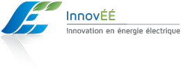
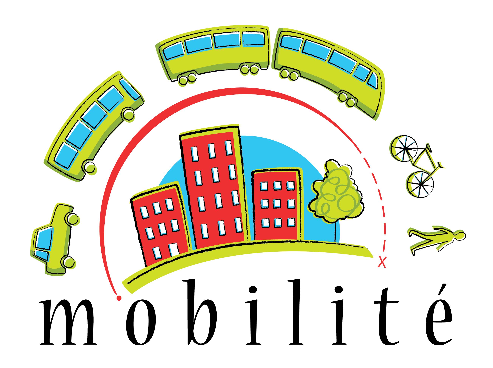
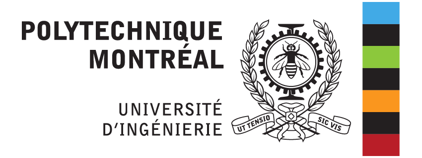

Votre région a accès à des données d'enquêtes de déplacements? Cette information d'importance capitale est présente à toutes les étapes du processus, vous offrant discrètement, mais constamment, des indices sur les impacts de vos choix. Nos outils d'analyse permettent aussi de visualiser les effets de chacune de vos décisions. Ces outils sont flexibles, fluides, et permettent de visualiser vos réseaux dans l'espace et le temps, vous offrant de nouvelles perspectives sur toutes les variations existantes dans vos villes et réseaux!
Transition est basé directement sur le format de données GTFS, ce qui signifie que lorsque votre réseau est prêt à publier, exporter les données pour publication est d'une simplicité désarmante, et se fait en un seul clic! Vous désirez mieux comprendre les interactions régionales? Il est tout aussi simple d'importer les flux de données des autres sociétés de transports de votre région!
L'évolution au service du transport collectif
Créer un tout nouveau réseau ou éditer un réseau existant élément est une tâche fastidieuse. Est-ce que vos décisions améliorent l'efficacité du réseaux, ou êtes-vous en train de faire des modifications sans résultats tangibles? Nous avons un module dédié spécifiquement à la réalisation de ces tâches (si votre région possède des données d'enquêtes de déplacements). Nous avons développé un ensemble d'algorithmes génétiques, qui peuvent créer de nouveaux réseaux ou en éditer des existants, et ce sans intervention humaine. Nous utilisons la puissance de l'informatique moderne dans le nuage pour générer les réseaux les plus efficaces et les mieux adaptés aux réalités du terrain.
+
Notre algorithme prend ensuite ces réseaux, les modifies, en crée des nouveaux, réévalue et sélectionne à nouveau les meilleures combinaisons d'arrêts, lignes et fréquences. Et le cycle se poursuit, nous permettant d'obtenir une solution optimale, c'est-à-dire qui offre le meilleur service aux usagers pour les coûts les plus faibles. Vous contrôler tous les paramètres d'importance&nsbp;: le nombre de véhicules disponibles, le nombre d'heures de service que vos budgets vous permettent d'offrir. Nos algorithmes prennent ensuite le relais, et vous offre le meilleur réseaux disponible en fonction de ces contraintes opérationnelles.
Et nos algorithmes servent aussi à élaborer des scénarios. Vous obtenez de nouveaux budgets et désirez les distribuer afin de maximiser les bénéfices pour vos usagers? Ou vous devez effectuer des coupures et réduire vos services en affectant le moins possible les utilisateurs? Vous pouvez simplement entrer les nouvelles contraintes, et nos algorithmes se chargeront de vous offrir des réponses à ces questions.
Ouvert
L'ouverture est au coeur de notre philosophie. Nous croyons sincèrement en développement collaboratif : énoncez vos besoins, et si ceux-ci nous semblent atteignables, nous développerons une solution y répondant pour vous, mais aussi pour l'ensemble de nos utilisateurs. Et puisque cette politique s'applique à tous, vous pourrez aussi bénéficier de nouvelles fonctions que vous n'aviez jamais envisagées!
+
Transition est une solution pouvant à la fois vivre dans le nuage, accessible de partout en tout temps, ou si vous le préférez peut être installée localement sur vos propres serveurs. Le seul outil nécessaire pour en faire usage est un navigateur web moderne. Vous pouvez alors tout faire, allant de la création de réseau simple jusqu'à la production de cartes d'analyse détaillées vous fournissant à la fois une aide à la planification, mais aussi des produits de visualisation permettant de mieux comprendre vos réseaux et opérations!
Nos logiciels sont principalement basés sur Ruby on Rails, une plateforme de développement web fiable et ouverte, ainsi que PostgreSQL, le meilleur système de gestion de base de données disponible. Nos outils sont basés intégralement sur des technologies à code source libre, sur lesquels nous ajoutons les nôtres. De nos algorithmes de routage (Open Source Routing Machine) aux données cartographiques (Open Street Map), nous utilisons les outils les plus puissants et ouverts disponibles, en plus de rendre disponible certains de nos propres outils libres et disponibles pour tous (TrRouting).
Financement et partenaires
Nous remercions le Conseil de recherches en sciences naturelles et en génie du Canada (CRSNG) de son soutien.

- Société de transport de Montréal
- Réseau de transport de Longueuil
- Société de transport de Laval
- EXO
- Société de transport de l'Outaouais
- Société de transport de Sherbrooke


Copyright © 2020 Transition